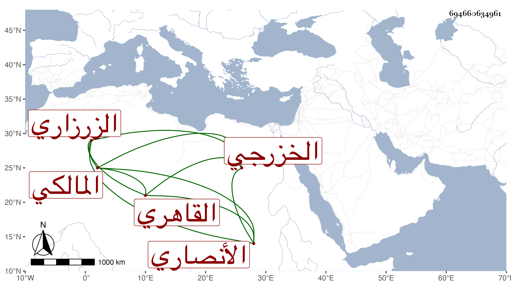

0902Sakhawi.DawLamic.ITO20230111-ara1.EIS1600.694660634961
Biography ID: 694660634961
أحمد بن عبادة بن علي بن صلح بن عبد المنعم الشهاب بن الزين الأنصاري الخزرجي الزرزاري الأصل القاهري المالكي . أخذ الفقه عن أبيه وغيره والعربية عن الحناوي وكذا أخذ عن العز عبد السلام البغدادي العربية والمنطق وتردد للمجد البرماوي وسمع عليه كثيرا من السيرة النبوية وكذا سمع من شيخنا وبرع في العربية وغيرها وشارك في الفقه وكان متأخرا عن أخيه النور علي فيه وبرع في العربية وغيرها وشارك في الفقه وكان متأخرا عن أخيه النور على فيه مقدما عليه في غيره ، وباشر تدريس الأشرفية بعد موت والده بل تصدى للإقراء وأخذ عنه الفضلاء وناب في القضاء ، وكان فقيرا ضعيف النظر بل كف ورغب عن جل وظائفه ولم يكن بالمرضي . مات في سنة إحدى وثمانين وأظنه زاد عن الستين ورأيت بعض المهملين أرخه سنة سبع وخمسين رحمه الله وعفا عنه .
